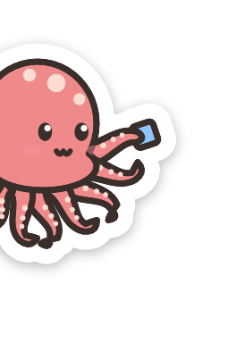

Gib es der Katze. Hol es dir später.
PawShelf ist ein Regal für deinen Mac. Eine kleine Figur schaut vom Bildschirmrand hervor und hält Dateien, Ordner, Bilder, Links und Text bereit, während du zwischen Apps wechselst.
Bald im Mac App Store
Für macOS 14 oder neuer, auf Macs mit Apple Chip und Intel.
So funktioniert's

Auf den Tab ziehen
Zieh irgendetwas auf die Figur am Bildschirmrand. Zu weit weg? Schüttle beim Ziehen den Zeiger, und das Regal öffnet sich direkt daneben.

Weiterarbeiten
Wechsle Apps, Spaces und Vollbildfenster. Der Tab bleibt am Rand, und deine Objekte sind auch nach einem Neustart noch da.

Herausziehen
Leg Objekte im Finder, in Mail, in einem Chat oder in einem Upload-Formular ab. Wähle mehrere aus, um sie zusammen herauszuziehen.
Such dir aus, wer auf deine Sachen aufpasst
Zwölf Figuren, jede mit ihrer eigenen Art, Dinge aufzubewahren. Manche Eigenheiten sind richtig nützlich: Die Backen des Hamsters zeigen, wie voll das Regal ist, das Eichhörnchen weist auf vergessene Objekte hin, und das Eis des Pinguins schmilzt Objekte weg, die du nicht mehr brauchst.
-


Kistenkatze
Versteckt deine Sachen in einem Pappkarton
-


Backenhamster
Je voller das Regal, desto dicker die Backen
-


Eichel-Eichhörnchen
Merkt sich vergessene Eicheln und schlägt Aufräumen vor
-


Eisfach-Pinguin
Legt deine Sachen auf Eis, bis sie wegschmelzen
-


Nachteule
Nachts hellwach, tagsüber verschlafen
-


Glitzer-Elster
Sammelt funkelnde Links und Bilder
-


Apportierhund
Bringt dir deine Sachen, wenn du sie brauchst
-


Beutelkänguru
Bewahrt deine Sachen sicher im Beutel auf
-


Pelikan
Öffnet seinen großen Schnabel, um Abgelegtes zu fangen
-


Achtarm-Oktopus
Hält in jedem Arm eine Sache
-


Buddel-Maulwurf
Bewahrt deine Sachen in seinem Bau auf
-


Panzerschildkröte
Schützt deine Sachen unter ihrem Panzer
Zeig auf einen Sticker, um Hallo zu sagen.
Alles, was ein Regal können sollte
Verlauf der Zwischenablage
Deine letzten 50 Kopien liegen direkt im Regal. Kopien, die Passwortmanager als privat markieren, werden nie gespeichert.
Neue Dateien sammeln
Wähle einen Ordner wie Bildschirmfotos oder Downloads, und neue Dateien landen von selbst im Regal.
In Bildern suchen
Finde ein Bildschirmfoto über die Wörter darin. Der Text wird auf deinem Mac erkannt.
Linktitel und Symbole
Links zeigen den Titel und das Symbol der Seite statt nur einer Adresse.
Zuletzt entfernt
Versehentlich entfernt? Hol es über das ⋯-Menü im Regal zurück.
Vorschau und Teilen
Drück die Leertaste für die Übersicht oder schick Objekte per AirDrop und Nachrichten.
Sammlungen
Fasse zusammengehörige Objekte in Sammlungen zusammen und zeig jeweils eine an.
In jedem Space
Der Tab ist in jedem Space da und liegt über Vollbild-Apps, am linken oder rechten Rand.
Bereit für VoiceOver
Jede Schaltfläche und jedes Objekt im Regal hat eine VoiceOver-Beschriftung.
Nichts in den Systemeinstellungen freizugeben
PawShelf fragt nicht nach Zugriff auf Bedienungshilfen oder Bildschirmaufnahme. Es läuft in der App-Sandbox und öffnet nur, was du ihm gibst. Was du ins Regal legst, bleibt auf deinem Mac.